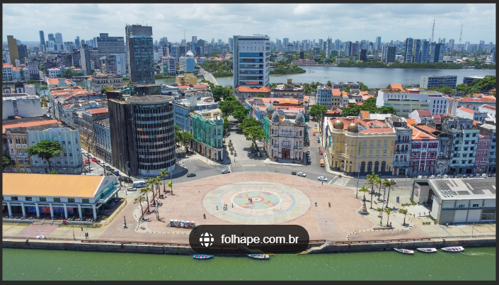

Sobre o Marco Zero
O Marco Zero é um dos pontos turísticos mais icônicos de Recife, localizado no bairro do Recife Antigo. É o ponto de partida para a contagem das distâncias rodoviárias da cidade.

História
O Marco Zero foi inaugurado em 1938 e desde então se tornou um local de grande importância histórica e cultural para a cidade. Ao redor do Marco Zero, você pode encontrar diversos eventos culturais e artísticos.
